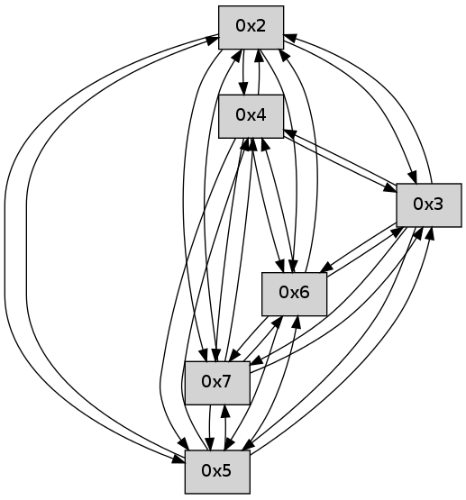

>> << IDX [start] -25 -5 +0 +5 +25 +100 [70.0010499954]
 Previous packets
----------------------------------------------------------------------
65.462165 beacon01(faad) #0 coord=01,02,03,04,05,06,07 cycle=496.0ms assoc
-- color-indic=0 64 0d b8
65.472133 beacon02(faad) #0 coord=01,02,03,04,05,06,07 cycle=496.0ms assoc 64 5a 7d
65.482133 beacon03(faad) #0 coord=01,02,03,04,05,06,07 cycle=496.0ms assoc 64 f6 df
65.492134 beacon04(faad) #0 coord=01,02,03,04,05,06,07 cycle=496.0ms assoc 64 81 aa
65.502134 beacon05(faad) #0 coord=01,02,03,04,05,06,07 cycle=496.0ms assoc 64 2d 08
65.512135 beacon06(faad) #0 coord=01,02,03,04,05,06,07 cycle=496.0ms assoc 64 c8 e7
65.522135 beacon07(faad) #0 coord=01,02,03,04,05,06,07 cycle=496.0ms assoc 64 64 45
65.533530 [Hello(4): seq=43 sym=5,7,6,2 sysInfo= stat=5:15,0,0,0/7:5,0,0,0/6:10,0,0,0/2:15,0,0,0]
65.537489 [Hello(2): seq=43 sym=4,5,7,6,3 sysInfo= stat=4:8,0,0,0/5:15,0,0,0/7:10,0,0,0/6:5,0,0,0/3:2,0,0,0]
65.542427 [Hello(5): seq=43 sym=7,6,4,2,3 sysInfo= stat=7:8,0,0,0/6:5,0,0,0/4:9,0,0,0/2:6,0,0,0/3:5,0,0,0]
65.550243 [Hello(3): seq=43 sym=5,7,6,4,2 sysInfo= stat=5:15,0,0,0/7:5,0,0,0/6:8,0,0,0/4:4,0,0,0/2:2,0,0,0]
----------------------------------------------------------------------
66.028278 beacon01(faad) #0 coord=01,02,03,04,05,06,07 cycle=496.0ms assoc
-- color-indic=0 64 36 8e
66.038246 beacon02(faad) #0 coord=01,02,03,04,05,06,07 cycle=496.0ms assoc 64 61 4b
66.048248 beacon03(faad) #0 coord=01,02,03,04,05,06,07 cycle=496.0ms assoc 64 cd e9
66.058248 beacon04(faad) #0 coord=01,02,03,04,05,06,07 cycle=496.0ms assoc 64 ba 9c
66.068249 beacon05(faad) #0 coord=01,02,03,04,05,06,07 cycle=496.0ms assoc 64 16 3e
66.078248 beacon06(faad) #0 coord=01,02,03,04,05,06,07 cycle=496.0ms assoc 64 f3 d1
66.088248 beacon07(faad) #0 coord=01,02,03,04,05,06,07 cycle=496.0ms assoc 64 5f 73
66.099317 [Hello(6): seq=43 sym=2,3,5,4,7 sysInfo= stat=2:6,0,0,0/3:6,0,0,0/5:5,0,0,0/4:5,0,0,0/7:7,0,0,0]
66.101687 [Hello(7): seq=43 sym=2,3,5,6,4 sysInfo= stat=2:9,0,0,0/3:5,0,0,0/5:5,0,0,0/6:13,0,0,0/4:5,0,0,0]
----------------------------------------------------------------------
66.594393 beacon01(faad) #0 coord=01,02,03,04,05,06,07 cycle=496.0ms assoc
-- color-indic=0 64 7b d4
66.604362 beacon02(faad) #0 coord=01,02,03,04,05,06,07 cycle=496.0ms assoc 64 2c 11
66.614361 beacon03(faad) #0 coord=01,02,03,04,05,06,07 cycle=496.0ms assoc 64 80 b3
66.624361 beacon04(faad) #0 coord=01,02,03,04,05,06,07 cycle=496.0ms assoc 64 f7 c6
66.634363 beacon05(faad) #0 coord=01,02,03,04,05,06,07 cycle=496.0ms assoc 64 5b 64
66.644362 beacon06(faad) #0 coord=01,02,03,04,05,06,07 cycle=496.0ms assoc 64 be 8b
66.654362 beacon07(faad) #0 coord=01,02,03,04,05,06,07 cycle=496.0ms assoc 64 12 29
66.666061 [Hello(4): seq=44 sym=5,7,6,2,3 sysInfo= stat=5:0,0,0,0/7:6,0,0,0/6:11,0,0,0/2:0,0,0,0/3:0,0,0,0]
66.668119 [Hello(2): seq=44 sym=4,5,7,6,3 sysInfo= stat=4:8,0,0,0/5:0,0,0,0/7:11,0,0,0/6:6,0,0,0/3:3,0,0,0]
66.671327 [Hello(3): seq=44 sym=5,7,6,4,2 sysInfo= stat=5:15,0,0,0/7:6,0,0,0/6:9,0,0,0/4:4,0,0,0/2:2,0,0,0]
66.676374 [Hello(5): seq=44 sym=7,6,4,2,3 sysInfo= stat=7:9,0,0,0/6:6,0,0,0/4:9,0,0,0/2:6,0,0,0/3:6,0,0,0]
----------------------------------------------------------------------
67.160507 beacon01(faad) #0 coord=01,02,03,04,05,06,07 cycle=496.0ms assoc
-- color-indic=0 64 40 e2
67.170476 beacon02(faad) #0 coord=01,02,03,04,05,06,07 cycle=496.0ms assoc 64 17 27
67.180477 beacon03(faad) #0 coord=01,02,03,04,05,06,07 cycle=496.0ms assoc 64 bb 85
67.190477 beacon04(faad) #0 coord=01,02,03,04,05,06,07 cycle=496.0ms assoc 64 cc f0
67.200478 beacon05(faad) #0 coord=01,02,03,04,05,06,07 cycle=496.0ms assoc 64 60 52
67.210478 beacon06(faad) #0 coord=01,02,03,04,05,06,07 cycle=496.0ms assoc 64 85 bd
67.220477 beacon07(faad) #0 coord=01,02,03,04,05,06,07 cycle=496.0ms assoc 64 29 1f
67.232187 [Hello(7): seq=44 sym=2,3,5,6,4 sysInfo= stat=2:10,0,0,0/3:6,0,0,0/5:6,0,0,0/6:13,0,0,0/4:6,0,0,0]
67.234247 [Hello(6): seq=44 sym=2,3,5,4,7 sysInfo= stat=2:7,0,0,0/3:7,0,0,0/5:6,0,0,0/4:6,0,0,0/7:8,0,0,0]
----------------------------------------------------------------------
67.726622 beacon01(faad) #0 coord=01,02,03,04,05,06,07 cycle=496.0ms assoc
-- color-indic=0 64 e1 60
67.736592 beacon02(faad) #0 coord=01,02,03,04,05,06,07 cycle=496.0ms assoc 64 b6 a5
67.746592 beacon03(faad) #0 coord=01,02,03,04,05,06,07 cycle=496.0ms assoc 64 1a 07
67.756593 beacon04(faad) #0 coord=01,02,03,04,05,06,07 cycle=496.0ms assoc 64 6d 72
67.766592 beacon05(faad) #0 coord=01,02,03,04,05,06,07 cycle=496.0ms assoc 64 c1 d0
67.776593 beacon06(faad) #0 coord=01,02,03,04,05,06,07 cycle=496.0ms assoc 64 24 3f
67.786592 beacon07(faad) #0 coord=01,02,03,04,05,06,07 cycle=496.0ms assoc 64 88 9d
67.797980 [Hello(4): seq=45 sym=5,7,6,2,3 sysInfo= stat=5:1,0,0,0/7:7,0,0,0/6:12,0,0,0/2:1,0,0,0/3:1,0,0,0]
67.799898 [Hello(3): seq=45 sym=5,7,6,4,2 sysInfo= stat=5:0,0,0,0/7:7,0,0,0/6:10,0,0,0/4:4,0,0,0/2:2,0,0,0]
67.803381 [Hello(2): seq=45 sym=4,5,7,6,3 sysInfo= stat=4:8,0,0,0/5:1,0,0,0/7:12,0,0,0/6:7,0,0,0/3:4,0,0,0]
67.812773 [Hello(5): seq=45 sym=7,6,4,2,3 sysInfo= stat=7:10,0,0,0/6:7,0,0,0/4:9,0,0,0/2:6,0,0,0/3:6,0,0,0]
----------------------------------------------------------------------
68.292737 beacon01(faad) #0 coord=01,02,03,04,05,06,07 cycle=496.0ms assoc
-- color-indic=0 64 da 56
68.302706 beacon02(faad) #0 coord=01,02,03,04,05,06,07 cycle=496.0ms assoc 64 8d 93
68.312706 beacon03(faad) #0 coord=01,02,03,04,05,06,07 cycle=496.0ms assoc 64 21 31
68.322707 beacon04(faad) #0 coord=01,02,03,04,05,06,07 cycle=496.0ms assoc 64 56 44
68.332705 beacon05(faad) #0 coord=01,02,03,04,05,06,07 cycle=496.0ms assoc 64 fa e6
68.342706 beacon06(faad) #0 coord=01,02,03,04,05,06,07 cycle=496.0ms assoc 64 1f 09
68.352707 beacon07(faad) #0 coord=01,02,03,04,05,06,07 cycle=496.0ms assoc 64 b3 ab
68.364418 [Hello(6): seq=45 sym=2,3,5,4,7 sysInfo= stat=2:8,0,0,0/3:8,0,0,0/5:7,0,0,0/4:7,0,0,0/7:8,0,0,0]
68.367738 [Hello(7): seq=45 sym=2,3,5,6,4 sysInfo= stat=2:11,0,0,0/3:7,0,0,0/5:7,0,0,0/6:14,0,0,0/4:7,0,0,0]
----------------------------------------------------------------------
68.858853 beacon01(faad) #0 coord=01,02,03,04,05,06,07 cycle=496.0ms assoc
-- color-indic=0 64 97 0c
68.868822 beacon02(faad) #0 coord=01,02,03,04,05,06,07 cycle=496.0ms assoc 64 c0 c9
68.878821 beacon03(faad) #0 coord=01,02,03,04,05,06,07 cycle=496.0ms assoc 64 6c 6b
68.888821 beacon04(faad) #0 coord=01,02,03,04,05,06,07 cycle=496.0ms assoc 64 1b 1e
68.898824 beacon05(faad) #0 coord=01,02,03,04,05,06,07 cycle=496.0ms assoc 64 b7 bc
68.908823 beacon06(faad) #0 coord=01,02,03,04,05,06,07 cycle=496.0ms assoc 64 52 53
68.918823 beacon07(faad) #0 coord=01,02,03,04,05,06,07 cycle=496.0ms assoc 64 fe f1
68.930547 [Hello(5): seq=46 sym=7,6,4,2,3 sysInfo= stat=7:11,0,0,0/6:8,0,0,0/4:9,0,0,0/2:6,0,0,0/3:6,0,0,0]
68.933852 [Hello(4): seq=46 sym=5,7,6,2,3 sysInfo= stat=5:2,0,0,0/7:8,0,0,0/6:13,0,0,0/2:2,0,0,0/3:2,0,0,0]
68.940545 [Hello(2): seq=46 sym=4,5,7,6,3 sysInfo= stat=4:8,0,0,0/5:2,0,0,0/7:13,0,0,0/6:8,0,0,0/3:4,0,0,0]
68.945531 [Hello(3): seq=46 sym=5,7,6,4,2 sysInfo= stat=5:1,0,0,0/7:8,0,0,0/6:11,0,0,0/4:4,0,0,0/2:3,0,0,0]
----------------------------------------------------------------------
69.424967 beacon01(faad) #0 coord=01,02,03,04,05,06,07 cycle=496.0ms assoc
-- color-indic=0 64 ac 3a
69.434936 beacon02(faad) #0 coord=01,02,03,04,05,06,07 cycle=496.0ms assoc 64 fb ff
69.444937 beacon03(faad) #0 coord=01,02,03,04,05,06,07 cycle=496.0ms assoc 64 57 5d
69.454938 beacon04(faad) #0 coord=01,02,03,04,05,06,07 cycle=496.0ms assoc 64 20 28
69.464938 beacon05(faad) #0 coord=01,02,03,04,05,06,07 cycle=496.0ms assoc 64 8c 8a
69.474937 beacon06(faad) #0 coord=01,02,03,04,05,06,07 cycle=496.0ms assoc 64 69 65
69.484937 beacon07(faad) #0 coord=01,02,03,04,05,06,07 cycle=496.0ms assoc 64 c5 c7
69.496019 [Hello(6): seq=46 sym=2,3,5,4,7 sysInfo= stat=2:9,0,0,0/3:9,0,0,0/5:8,0,0,0/4:8,0,0,0/7:9,0,0,0]
69.499313 [Hello(7): seq=46 sym=2,3,5,6,4 sym= sysInfo= stat=]
----------------------------------------------------------------------
69.991080 beacon01(faad) #0 coord=01,02,03,04,05,06,07 cycle=496.0ms assoc
-- color-indic=0 64 5c 6b